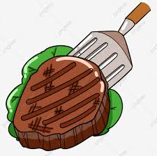

Leslin Maricela Martin Lopez
5to bachillerato en computacion
Examen bimestre3
filete
 En una sartén, a fuego medio, calienta una cucharada de aceite y agrega la cebolla y el pimentón. Adoba los filetes con un poco de aceite, sal y pimienta al gusto . Cocínalos a fuego medio en una sartén y déjalos dorar 8 minutos por cada lado o menos si deseas un término con menos cocción le puedes dar menor tiempo.
salmon
 INGREDIENTES:500 g. de salmón 1 limón 1cucharadita de eneldo 1 cucharadita de pimienta Alcaparras al gusto PREPARACION: Engrasar un fuente de horno y colocar el salmón con la piel hacia abajo. Salpimentar y añadir el eneldo y la ralladura del limón. Hornear a 180º C durante 15 minutos. Añadir las alcaparras antes de servir.
INGREDIENTES:500 g. de salmón 1 limón 1cucharadita de eneldo 1 cucharadita de pimienta Alcaparras al gusto PREPARACION: Engrasar un fuente de horno y colocar el salmón con la piel hacia abajo. Salpimentar y añadir el eneldo y la ralladura del limón. Hornear a 180º C durante 15 minutos. Añadir las alcaparras antes de servir.